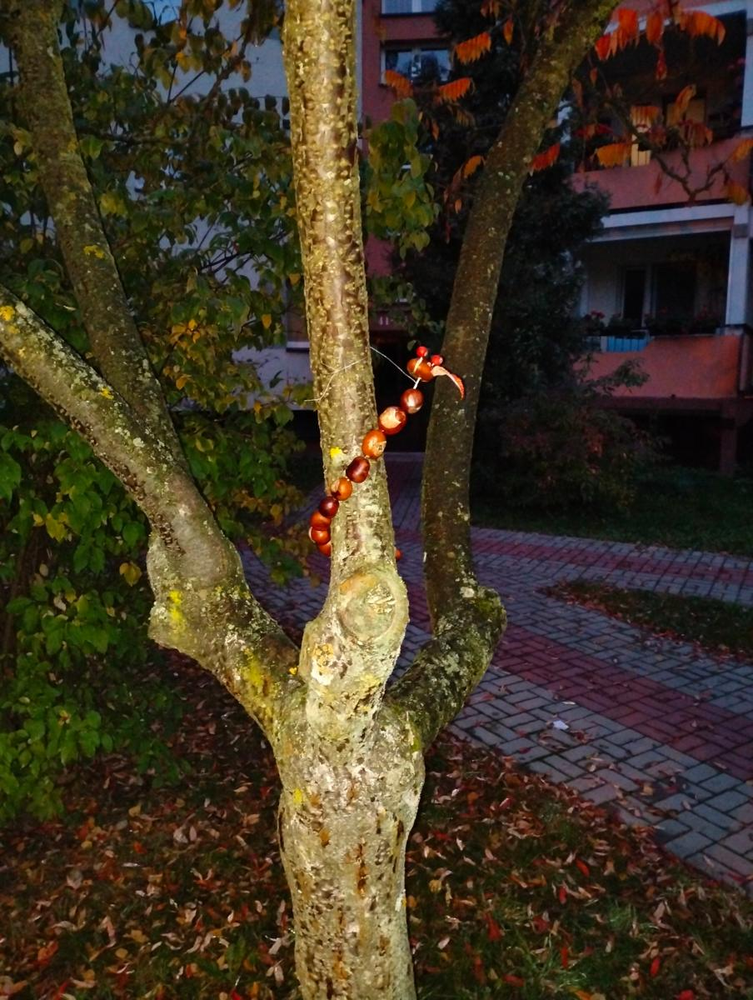

Wystawa
Kasztaniaków
Małe figurki wielkiej wyobraźni
Kasztanowe ludziki zamieszkały na drzewach jednego z kieleckich osiedli. Wspinają się po pniach, pilnują konarów, zalecają się do panien i odlatują na balonach. To wystawa street artowa: bez biletów, bez godzin otwarcia, dla każdego, kto przechodzi obok.
- Wystawa trwa
- Wstęp wolny
- Plener, Kielce
- 14 figurek

o zmierzchu!
Galeria nie musi mieć ścian. Wystarczy drzewo, garść kasztanów i trochę odwagi, żeby zostawić coś dla sąsiadów.
O wystawie
Każdej jesieni chodniki zasypują kasztany. Zamiast je mijać, zrobiliśmy z nich mieszkańców osiedla. Figurki powstały z kasztanów, wykałaczek, liści, sznurka i rzeczy, które zwykle lądują w koszu, jak kapsel czy kawałek kartki.
Wystawa jest żywa. Od października 2026 przybywa na niej nowych postaci, a deszcz, wiatr i ciekawskie ptaki czasem coś zmieniają. Dlatego za tydzień możesz zobaczyć inną wystawę niż dziś.
To kolejny projekt zrealizowany oddolnie w ramach Gildii Innowacji. Sprawdzamy na nim prostą rzecz: jak mało potrzeba, żeby wspólna przestrzeń zaczęła się uśmiechać.
Kogo spotkasz na drzewach
Październikowa aktualizacja: na drzewach zamieszkali nowi mieszkańcy. Mały Jo, Szaman Krzyś, Robert, Czarodziejka Helenka, Odlotowa Julka, Stonoga Barbara, Motylek Felek z wróżką Bogusią i Wysportowany Jaś czekają na odwiedziny.
Jak odwiedzić wystawę
Gdzie
Na osiedlu w Kielcach. Otwórz lokalizację w Mapach Google
Kiedy
O każdej porze. Najlepszy klimat jest o zmierzchu, kiedy latarnie i latarka w telefonie wydobywają kolory kasztanów.
Dla kogo
Dla wszystkich. Dzieci wypatrzą najwięcej, więc warto zabrać je na spacer i zrobić z tego zabawę w szukanie.
Zasady zwiedzania
- Oglądaj i fotografuj ile chcesz, ale zostaw figurki na miejscu, żeby zobaczyli je też inni.
- Jeśli któraś spadła, odłóż ją delikatnie na pień lub konar.
- Pokaż zdjęcia znajomym i oznacz Gildię Innowacji. Wystawa żyje dzięki temu, że ktoś o niej opowiada.
Dołóż swojego kasztaniaka
Wystawa jest otwarta nie tylko dla oglądających. Każdy może dołożyć własną postać.
Zbierz kasztany
Najlepsze są świeże, błyszczące. Łatwiej się je przebija i dłużej wyglądają dobrze.
Zrób otwory
Szpikulcem lub cienkim gwoździkiem. Młodszym dzieciom w tym kroku pomaga dorosły.
Złóż postać
Wykałaczki, liście, jarzębina, sznurek, kapsle. Liczy się pomysł, nie ilość materiału.
Zostaw ją na drzewie
Posadź na konarze albo przywiąż luźno sznurkiem. Bez gwoździ i drutu wbijanego w korę.
Zrobiłeś kasztaniaka? Wyślij zdjęcie na wolanin.w@gmail.com, a dodamy go do galerii.

Projekt Gildii Innowacji
Gildia Innowacji to bezpłatny program dla młodych ludzi w wieku 15–25 lat, którzy uczą się działać, realizując prawdziwe projekty w swojej okolicy. Wystawa Kasztaniaków dołącza do Katalogu Innowacji jako kolejny przykład, że lokalna zmiana może zacząć się od czegoś bardzo małego.
Chcesz zrobić podobną akcję u siebie albo masz pomysł na następny projekt? Odezwij się.